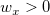

Kernel2width
Kernel2width-func
Definition:
kernel2width( vX, vY, wx, wy[, int method=0, int grid=32]) returns the 2D kernel density optimal bandwidths (wx, wy) of X scale and Y scale for datasets (vX, vY) using two different methods.
When method = 0 (default)
Bivariate Kernel Density Estimator method is used.
This method offers bandwidth based on linear diffusion process.
When method = 1
Rule of Thumb method is used.
The estimation of wx and wy simply can be calculated by:
/math-cec7115d5d7539d52893269c30efe6e0.png "w_x = \frac{\sigma_x}{2n^{1/6}}")
/math-10e70e705a9ba4b7186d81a054f0ae60.png "w_y = \frac{\sigma_y}{2n^{1/6}}")
where n is the size of vector vX or vY, /math-5bd0825b15108cd960569affb725147c.png "\sigma_x") is the sample standard variation for dataset vX, and
is the sample standard variation for dataset vX, and /math-ba323dc814191392965d1fa1728664fc.png "\sigma_y") for dataset vY accordingly.
for dataset vY accordingly.
Parameters:
- vX (input, vector)
- x values of distributed samples used to estimate bandwidth
- vY (input, vector)
- y values of distributed samples used to estimate bandwidth
- wx (output, double)
- output width for X scale, 
- wy (output, double)
- output width for Y scale,
- method (input, int)
- method = 0 (default) for Bivariate Kernel Density Estimator method or 1 for Rule of Thumb method.
- grid (input, int)
- input number of grids in X/Y direction for method=0, grid is a positive integer.